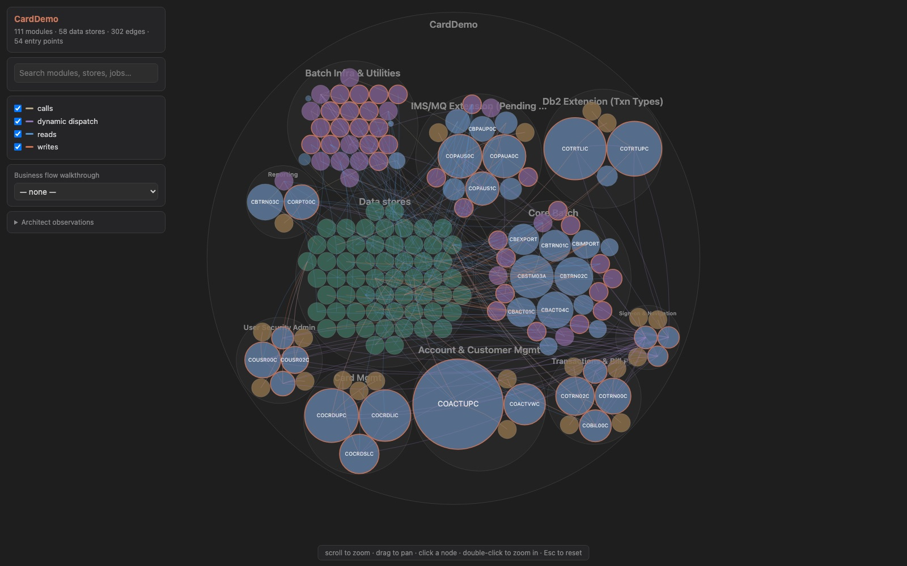
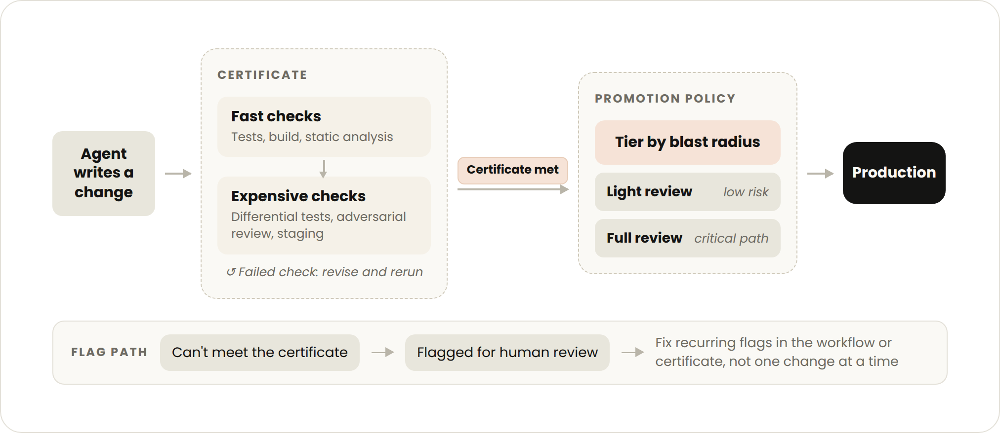
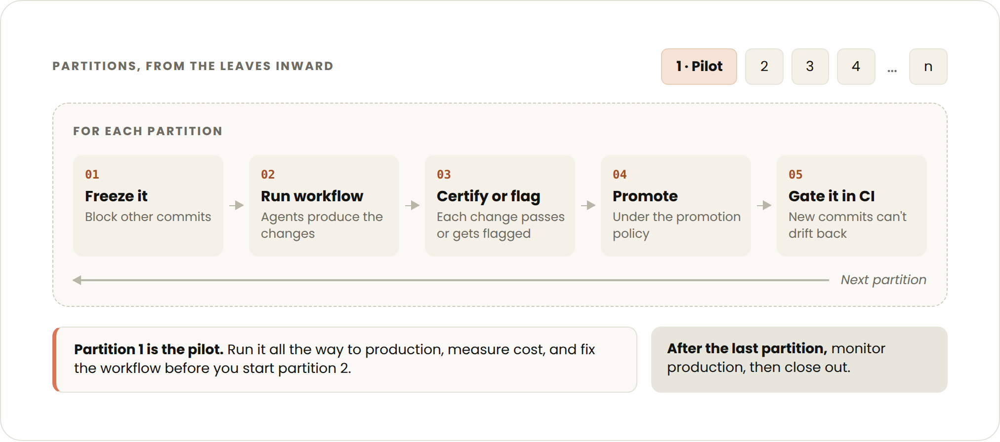

In our Notes from the Field series, Anthropic forward deployed engineers share best practices inspired by real customer deployments. In this article, we share our experience managing large code modernization projects.
Code modernizations once scoped as multi-year, all-hands efforts can now finish in months (or weeks), but the organizational work on either side often remains the same.
For example, every change to a critical banking system must go through change management, review, and approval. It is a robust process because regulators, auditors, and the business require it.
Those processes are what make critical systems trustworthy, and they were built on the assumption that a human wrote each change and a human would review each diff. Once agents accelerate writing the changes, the bottleneck shifts from producing changes to mobilizing the organization around them.
This article covers the work enterprises must do before the modernization takes place: defining what done means, what evidence a change must carry, how certified changes will reach production, and what has to be staged so the run can start.
We break this process into six steps:
- Define the target: the tech stack and behavior the modernized code must have.
- Create the certificate: the conditions that the changes must meet to be considered correct in the target state.
- Set the promotion policy: the path by which certified changes get into production at the rate they’re produced.
- Put the prerequisites in place: environment, CI/CD, review capacity, and approvals.
- Build and refine the agentic workflow: the custom Claude Code dynamic workflow that distributes the modernization across many smaller parallel subagent workstreams that produce the changes. This is built around the target, certificate, and promotion policy.
- Run the modernization: prove the workflow end to end on a small partition of the codebase, then scale.
Step 1: Define the target
The target is the end state of the modernization. The desired end state determines which of the three kinds of modernization you are doing, detailed in the table below.
Determine the modernization type
| Type | What it is | Choose when | The target is |
| Uplift | Same-stack version bump (e.g., C++11 → C++20). | The stack is fine but the version has fallen behind: end-of-life runtimes, unpatched security issues, dependencies you can no longer upgrade. | A runtime version and package set. |
| Transform | Cross-stack rewrite that keeps behavior fixed (e.g., COBOL → Java). | The stack is the problem to resolve and the behavior is trusted. | Everything needed for an uplift, plus the language, frameworks, and architectural conventions the new code must follow. |
| Reimagine | Greenfield rebuild on a new architecture with modified behavior. | The behavior needs to be changed alongside the code. | Everything needed for a transform, plus a written behavioral spec for the new system. |
Determining which type of modernization to do is often debated inside an organization. In our experience, the people closest to production want the stack swapped with behavior held constant to contain risk (transform modernization). On the other side are often the engineers who have lived with the codebase and want the modernization to pay down tech debt, plus other business stakeholders who want to take the opportunity to name new requirements (reimagine modernization).
Both positions are reasonable, but if the question is left unresolved it resurfaces later as an argument over whether a given change is “correct.” Building consensus on which path to take adds initial friction, but streamlines the project as a whole.
Map the codebase and create the behavioral spec
Understanding the current system is often a good first step for defining the target. Extracting what the old code actually does and creating an inventory of current behavior makes it easy to decide if parts should be changed or dropped, and so whether the modernization is a transform or a reimagine. This also often reveals unknown business logic and edge cases.
Claude can do much of that discovery by mapping dependencies and documenting workflows that nobody remembers building. The code modernization plugin’s assess, map, and extract-rules commands mine business rules with source citations that engineers can then review.
However, Claude’s discovery alone may not capture how a legacy system fully behaves. Interviews with business users and developers, and internal documentation, can fill those gaps. Context gathering may take some time upfront, but the quality of that context shapes every decision the workflow makes later.
For a reimagine, defining the target requires additional work: a detailed behavioral spec should be written down and agreed with user groups.

Establish the project’s justification and goals
Alongside defining the target, the organization should consider why the modernization is worth undertaking at all. Modernizing legacy systems can reduce ongoing maintenance and operational costs, however, in our experience, cost reduction has not been the driving goal of most modernization projects.
Risk reduction is often the most important modernization benefit. Consider the risk of not doing the modernization when debating whether or not to undergo the project.
For example, a system carrying unpatched vulnerabilities can mean a cyber breach or an outage severe enough to put the business itself at risk. An unsupported runtime or a shrinking pool of engineers who understand the system exacerbates the risk.
Agentic coding tools like Claude Code have shortened modernization timelines, but budgets are still hard to estimate, which leads to inertia. We have released the costs of some of our large-scale modernizations as have others. These can serve as a rough baseline, and we have additional guidance on budget projections at the bottom of this guide.
The main challenge in initiating these projects is usually building the internal consensus and commitment from the teams that own the system, and the teams that depend on it. Building the business case and setting the goals of the project, often at the leadership level, make this part of the process easier. This also helps anchor the tradeoffs in the certificate and promotion policy that follow. When stakeholders disagree over how much risk a change can carry, the risk of not modernizing is the counterweight.
Step 2: Define the certificate
The certificate is the set of conditions or tests that every modernization change must meet. Pick the conditions that give the strongest cumulative evidence that the change is correct against the target.
Each condition should be checkable without a human in the loop, so the agentic workflow can iterate on a change until it meets the certificate or flag it for human review if it can’t.
What goes into the certificate depends on the target, but will usually draw from this list:
- The original test suite passes
- Claude-authored tests written during the modernization all pass
- Test coverage meets an agreed threshold
- Performance benchmarks stay within an agreed bound
- Independent adversarial reviews by Claude, each in a fresh context window, find no blocking issues
- For user interfaces, Claude-driven computer use finds no regressions
- Current and target versions produce the same output from the same input, which can be live, recorded, or Claude-generated
- Persisted state and wire formats round-trip between current and target versions
- Changes run in staging for an agreed period with no regressions in error rates, latency, or alerts
- Static analysis and security scans show no new findings
- For compiled targets, the build is clean and type checks pass
Write the certificate with the people who will review and promote changes into production. Bring in the developers, user groups, and business leads who depend on the codebase now, while the certificate and agentic workflow are still being designed.
Their expertise shapes what the certificate measures, and their early involvement is what earns their buy-in when changes reach review. A good check on the finished certificate is whether they would be comfortable merging on the certificate's evidence alone. If they see their own bar in it, the promotion policy in Step 3 can be lighter.
What the certificate checks against, and how, depends on the modernization type.
- For an uplift modernization, parity is against the original codebase, and the original test suite can be the core of the certificate.
- For a transform modernization, parity is also against the original codebase, but the original test suite rarely runs on the new stack. Replay of production traffic, differential testing between old and new, and a prod-parallel deployment do most of the work instead.
- For a reimagine modernization, the certificate is anchored in the behavioral spec. This is the hardest case. A spec is less objective than an existing system to diff against, so a larger degree of model judgement is involved, which can lead to more variable outcomes. Here, the certificate leans on tests written from the spec, independent adversarial reviews by Claude that check each change against the sec, and differential checks where the new system keeps the old one’s behavior. Expect to revise the certificate as the spec is clarified: gaps in the spec show up here first.
Older systems often have thin test coverage, flaky tests, and little telemetry. Part of defining the certificate is identifying these gaps. If it will be difficult to support a strong certificate, one of the most useful things to do at this step is to use Claude to build the missing evidence, whether that’s standing up a prod-parallel setup, building a replay harness, or writing more tests.
Step 3: Set the promotion policy
Agents will produce changes far faster than any human team can review them diff-by-diff. The promotion policy is a tiered review path–written down and agreed in advance–that sets the depth of human review for a change, so the modernization can finish on an acceptable timeline.
Like the certificate, work this step with the reviewers, and fit it into your organization's existing change-management process wherever you can. The details will differ by organization and the risk tradeoffs it faces, but a few rules hold everywhere:
- Tier changes by blast radius and agent confidence. Use your organization's own change or risk classification if it has one. Keep full human review for critical paths.
- Fix recurring flags at the source. Group and analyze the flagged changes over time. When the same kind of flag keeps recurring, fix the cause in the agentic workflow or the certificate rather than reviewing each one.
- Design the output format with the reviewers. Agree on what information and format make review the fastest, and what signals give more confidence than others. Have them review early sample outputs in Step 5.
- Allocate SME time effectively. SMEs won't read every final diff, but their judgment is still the scarce input. Make it easy for them to go straight to the changes in the highest-risk tiers, and to the flagged agent decisions within each one, without wading through large diffs. A small number of expert hours then covers the changes that carry the most risk.
Many of these rules front-load SME hours by engaging them early in the project. Their feedback tunes the certificate and the agentic workflow before the full modernization begins.
Their sign-off on the samples also becomes further justification for a lighter review path where there is high confidence. This is the reverse of the traditional, non-agentic pattern, where review happens at the end.

The promotion policy should also reflect where the modernization sits on the spectrum between speed and review depth. A modernization racing to a hard deadline, such as a runtime losing support, needs a faster policy with lighter human review and an explicit agreement to accept more risk per change.
A modernization on a longer timeline can afford deeper human review and a slower cutover. Stakeholders will land on different points of this spectrum depending on their risk appetite and constraints so it is worth locking in before the work starts.
In a regulated environment, taking a lighter human review path for any change can cause real discomfort. Individual approvers hesitate to sign off because they carry the risk of a bad change, while leadership carries the larger risk of an aging system.
In our experience, it is best to have the directive for the promotion policy come from the top of the organization. It is also better to agree on it beforehand so responsibility for a bug that reaches production is shared, not pinned on whoever approved the change.
All of this still depends on a certificate detailed enough to serve as real evidence, and on reviewers who understand how Claude arrived at a change well enough to trust it.
Step 4: Put the prerequisites in place
Much of this step runs through teams outside the modernization: platform or infrastructure for the host, QA or release engineering for test capacity, security and compliance for approvals. Each of those teams often has its own backlog or approval process, so open the conversations early, as soon as you have identified the requirements, often while Steps 1 through 3 are still underway.
Environment
- A dedicated remote host for running the workflow with the codebase and other relevant sources reachable by Claude
- Test capacity as required by the certificate
- Anything that strengthens the certificate: production telemetry, a prod-parallel setup, or production data for replay
Codebase and CI/CD
- A dependency map of the codebase, grounded in build and compile logs; import analysis; or runtime traces. Note: The plugin’s map command is a good starting point, but depending on the size and age of the codebase, more extensive upfront work may need to be done
- Planned treatment of any dependencies or packages, as part of the target definition
- A compatibility check ready to add to CI/CD, if needed
- An agreed code-freeze policy, if you are modernizing in place
- A communication plan for active developers covering any code freezes and new compatibility requirements
Teams and review
- Agreement from other teams that depend on the codebase on how they take part, like signing off on the certificate or reviewing under the promotion policy, with reviewer time set aside
Security and compliance
- A model access path for Claude Code approved for source code
- Least-privilege access for the agentic workflow: write only to modernization branches and no production credentials
- Secrets and PII scrubbed or masked from the modernization branch
- Every change traceable and PR linked to an agent transcript and certificate evidence
- License and vulnerability checks on new dependencies
Step 5: Build and refine the agentic workflow
Use Claude Code to develop a customized dynamic workflow for modernizing the codebase.
We recommend starting with the code modernization plugin, and putting everything the workflow may need on the file system or over MCP, where Claude can reach it. This includes the target, certificate, promotion policy, codebase, documentation, and whatever data sources or tooling the certificate requires. You can give this article to Claude as context too. This forms the central knowledge base for the project.
With that in place, building the modernization workflow is the easy part. Have SMEs review Claude’s work as needed, including any codebase-specific skills or extracted rules before anything downstream relies on it.
Refine what you've built by applying it to small parts of the codebase, with SMEs reviewing the changes it produces, the agents’ process, and the evidence the certificate was met.
You should modify the workflow, not each change, when issues surface. The goal is confidence that, once scaled, changes will meet the certificate almost everywhere and reviewers will be comfortable merging under the promotion policy.
Step 6: Run the modernization
First, complete the modernization end to end on a small part of the codebase, including reviewing and landing the changes through the promotion policy. Fix anything that doesn’t work while it’s still cheap, repeat the process until you are confident, then scale to the full codebase.
While transform and reimagine modernizations involve building the target alongside the existing system and cutting over once complete, an uplift has a second option: modernizing in place on the live codebase while development continues.
This is the usual choice when the system cannot be down, or when the codebase changes so quickly that it’s difficult to keep a separate modernized copy up to date. What we have seen work in this case is splitting the codebase into logical partitions from the leaves inward; freezing and modernizing one partition at a time; and gating CI/CD so new commits cannot undo a partition once it has been modernized.

A note on cost
We often get asked what a modernization like this will cost in tokens. Each modernization effort is different, but the main cost drivers include:
- How much of the codebase has to be read versus changed;
- How involved the certificate is (verification, not writing the change, is usually the larger share in a regulated environment);
- How much new test writing and test repair the certificate demands; and
- How much reconciliation work comes from other teams merging around you while the run is in progress.
When completing the modernization on a small part of the codebase, measure token-usage and use that to extrapolate for the rest of the run. Treat anything the pilot couldn’t see, such as reconciliation on a live codebase, as an unknown. This way you can get an estimate for the cost floor for the full modernization.
Measurements from the pilot also show where to optimize your agentic workflow for cost. Find the parts of the workflow that consumed the most tokens and consider how to make them more efficient. Move compute-heavy verification signals behind cheaper gates so they only run once easier checks have passed.
Consider using models like Sonnet that balance cost and capability for the mechanical, high-volume work the certificate fully checks. Keep more intelligent models for hard transformations and the adversarial reviews that verify correctness.
You can also escalate to a more expensive model when a less expensive one fails to meet the certificate, but analyze retry rates carefully while piloting, since several cheap attempts can cost more than one expensive one. If you give Claude access to both the workflow and the pilot data, it can do much of this analysis with you.
Beyond the modernization
The modernized codebase is one output. The others are the workflow that produced it, a written certificate for what counts as correct, a promotion policy your change-management process has already accepted, and an evidence trail for every change that landed. Codify the playbook as a reusable asset, so the pattern is already in place for the next upgrade or rewrite.
Our forward deployed engineers work through these steps with customers on their most critical systems. If you're preparing a modernization, talk to our team.